각 컷은 Playwright probe 로 재현 가능하며, probe 위치는 캡션에 명시되어
있다. Part A 의 흐름은 운용 매뉴얼의 §5~§11 단계와 1:1 일치한다.
Part A — 운영 흐름 (Operation Flow)
본 Part 의 10 컷은 시뮬레이터를 처음 사용하는 운영자가 순서대로 거치는 화면이다.
각 컷의 caption 우측에 매뉴얼 §, 우측 끝에 재현 probe 가 명시되어 있다.
A-1. EntryScreen — 모드 선택
그림 A-1. 부팅 직후 ModeSelector 화면. 5종 모드 카드 (Workbench·SinglePlant·Foundry·Twin·Calibration) 중 Workbench 선택 / 매뉴얼 §5.1 / probe: `_probe-entry-screen.spec.ts`
A-2. 로딩 화면 — 식물 인스턴스 빌드
그림 A-2. 모드 진입 직후 로딩 화면. 식물 인스턴스 빌드 단계가 가장 오래 걸린다 (시드별 식물 군집 생성) / 매뉴얼 §5.2 / probe: `_probe-entry-screen.spec.ts`
A-3. Workbench 진입
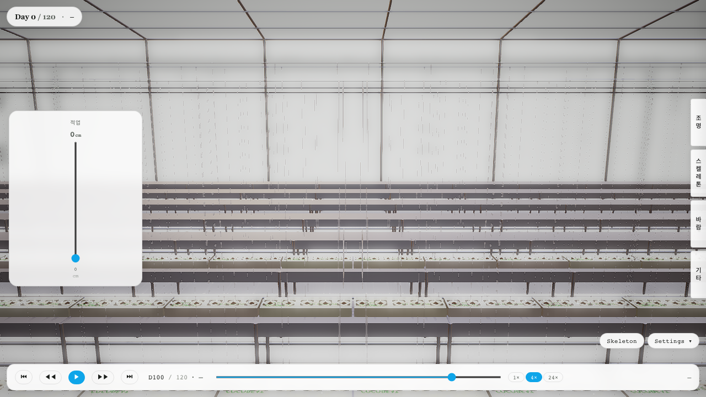
그림 A-3. 첫 프레임 렌더 완료 시점. 좌측 도크·메인 카메라·우측 TaskPanel 의 3-zone 레이아웃 표시 / 매뉴얼 §5.3 / probe: `_probe-boot-trace.spec.ts`
A-4. 시나리오 Picker
그림 A-4. 시나리오 Picker. 적심·적과 관제 시연용 권장 시나리오는 `phenotyping-D110-survey` / 매뉴얼 §6.1 / probe: `_probe-phenotyping.spec.ts`
A-5. START SURVEY — 페노타이핑 서베이
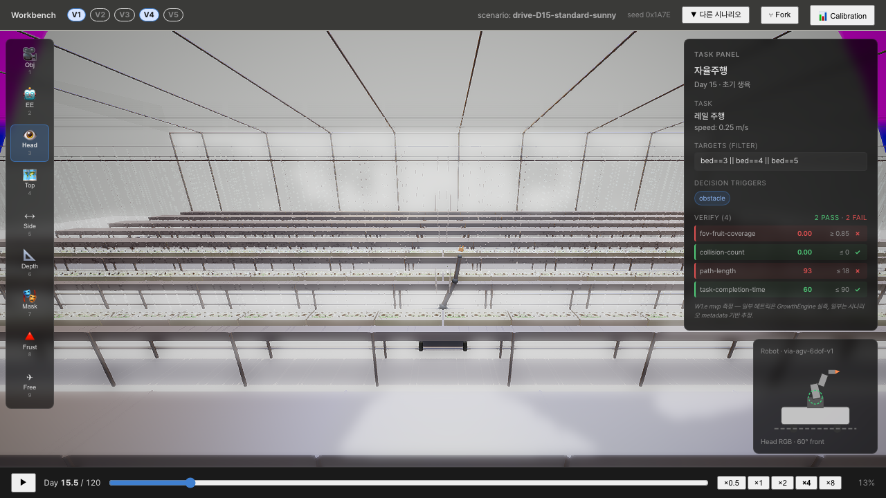
그림 A-5. TaskPanel 의 START SURVEY 직후. 좌측 베드 forward 스캔 진행 중 / 매뉴얼 §7.2 / probe: `_probe-scenario-20.spec.ts (drive-D15)`
A-6. Gimbal PiP — 짐벌 카메라 시점
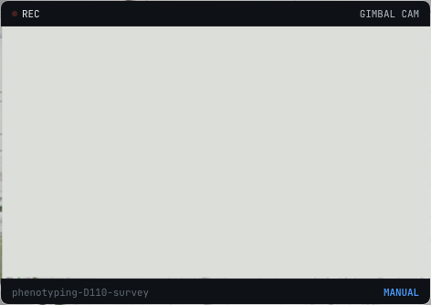
그림 A-6. PiP frame at rail X = -0.95m. REC / GIMBAL CAM / MANUAL chip 모두 표시 / 매뉴얼 §7.3 / probe: `_probe-scenario-20.spec.ts (pip-frame)`
A-7. 디텍션 오버레이 — HSV 5-band ripeness
그림 A-7. Workbench 우측 패널에 HSV 분류 매트릭스. 5 ripeness bin (green·breaker·turning·pink·red) 별 카운트 + 분포 / 매뉴얼 §7.4 / probe: `_probe-detect-flow.spec.ts`
A-8. 결과 시트 (Result Sheet)
그림 A-8. 서베이 완료 후 결과 시트. bin별 카운트 표 + 분포 차트 + 평가 메모 / 매뉴얼 §8 / probe: `_probe-scenario-20.spec.ts (thin-D70)`
그림 A-10. `?debug=*&quality=10` 모드의 성능 HUD (우상단 perf 패널). fps · 메모리 · WS frame rate 확인 / 매뉴얼 §11 / probe: `_probe-boot-trace.spec.ts`
Part B — 시나리오 변주 갤러리
본 시뮬레이터는 단일 시나리오가 아닌 다양한 운용 조건 에서 동작한다. 본 Part 는
시뮬레이션 결과의 일관성을 보여주는 6 컷이다. 각 컷의 시나리오 ID 와 시드는
시나리오·데이터셋 (05_Scenario_Datasets.zip) 의 카탈로그와 1:1 매핑된다.
B-1. drive-D15 — 정착 후 15일
그림 B-1. drive-D15-standard-sunny 시나리오. 정착 후 15일, 표준 일사. 어린 식물 군집과 traverse 동작 검증 / scenario: `drive-D15-standard-sunny` / probe: `_probe-scenario-20.spec.ts`
B-2. drive-D45 — 정착 후 45일, 흐린 날
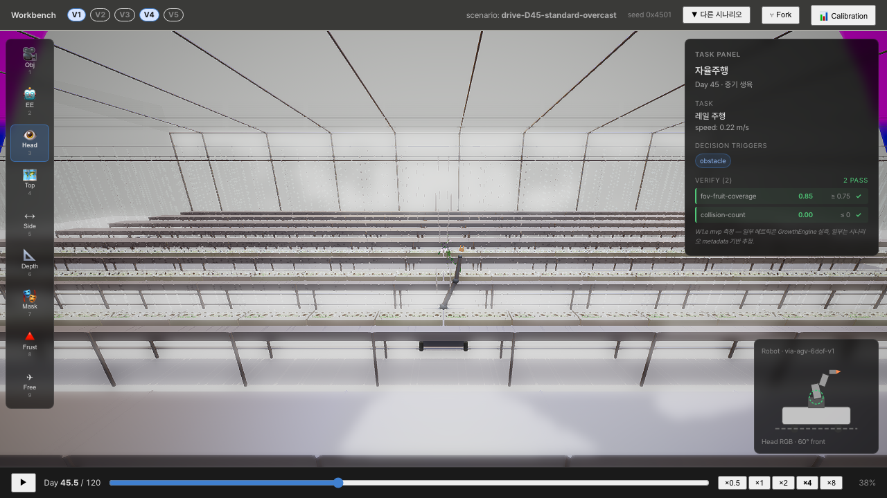
그림 B-2. drive-D45-standard-overcast 시나리오. 정착 후 45일, 흐린 날. 광량 변화에 대한 디텍션 robustness 검증 / scenario: `drive-D45-standard-overcast` / probe: `_probe-scenario-20.spec.ts`
B-3. spray-D60 — 정착 후 60일, 고LAI
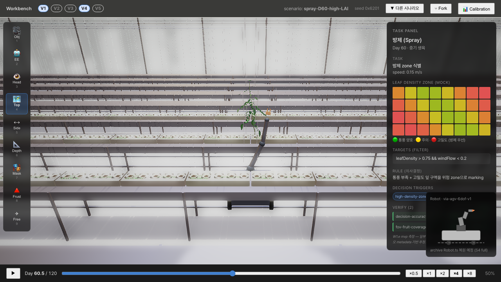
그림 B-3. spray-D60-high-LAI 시나리오. 정착 후 60일, 고밀도 엽군. 분무 시연 + LAI ≈ 2.6 환경의 occlusion 검증 / scenario: `spray-D60-high-LAI` / probe: `_probe-scenario-20.spec.ts`
B-4. thin-D70 — 정착 후 70일, 적과
그림 B-4. thin-D70-truss3-multi 시나리오. 정착 후 70일, 3번째 truss 다중 적과 시연. 결과 시트의 적과 권장 라벨 검증 / scenario: `thin-D70-truss3-multi` / probe: `_probe-scenario-20.spec.ts`
B-5. prune-D80 — 정착 후 80일, 적심
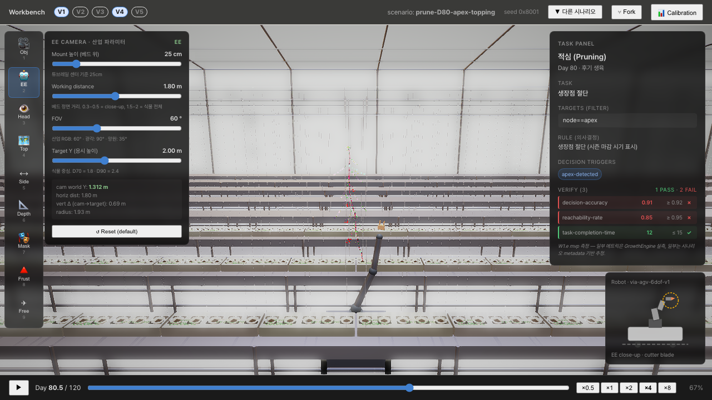
그림 B-5. prune-D80-apex-topping 시나리오. 정착 후 80일, 정단 적심 시연. apex 제거 후 측지 발달 동작 검증 / scenario: `prune-D80-apex-topping` / probe: `_probe-scenario-20.spec.ts`
본 문서의 식물은 3D 시각 자산이 아니라 학술 backbone 기반 mechanistic
crop model 의 일일 적분 결과 다. Part C 는 그 모델의 시각 자료 4건이다.
각 차트는 10_Test_Report.pdf §5.3 의 자동 검증 spec 결과로 만들어진다.
C-1. 누적 Thermal Time (GDD) — CROPGRO 표준
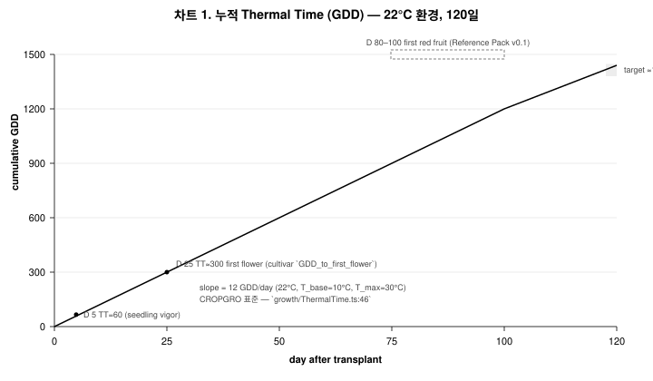
차트 C-1. 22 °C 상수 환경, 120 일 — slope = 12 GDD/day. T_base 10 °C / T_max 30 °C cardinal 범위. D 25 ≈ 첫 개화, D 80~100 ≈ 첫 적과 가능 시점
C-2. LAI 곡선 — TOMSIM mature canopy target band
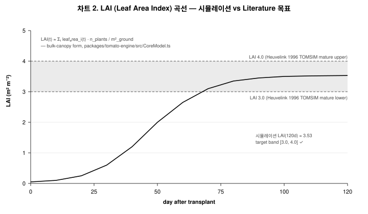
차트 C-2. LAI 시뮬레이션 곡선 vs Heuvelink 1996 TOMSIM mature target band [3.0, 4.0]. 120 일 시뮬레이션 결과 LAI ≈ 3.5 → target band 통과
C-3. 과실 Gompertz 곡선 — 3 cultivar 비교
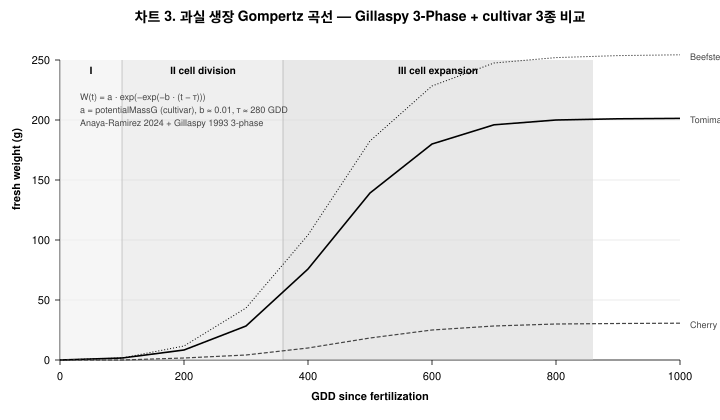
차트 C-3. Gillaspy 1993 3-phase + Anaya-Ramirez 2024 Gompertz fit. Tomimaru 200 g / Cherry 20 g / Beefsteak 280 g 의 fresh-weight 곡선. 같은 모델·다른 cultivar 파라미터로 다양한 표현형 도출
C-4. Cultivar 5종 핵심 파라미터
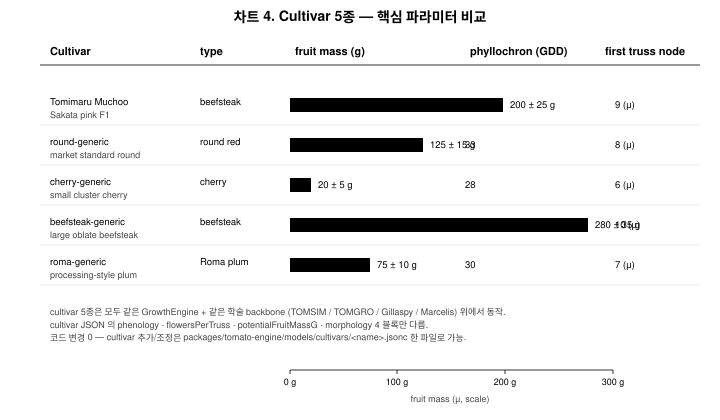
차트 C-4. 본 시뮬레이터에 포함된 5 cultivar (tomimaru-muchoo / round-generic / cherry-generic / beefsteak-generic / roma-generic) 의 fruit mass · phyllochron · first truss node 비교. 같은 GrowthEngine 위에서 cultivar JSON 한 파일만 바꿔 동작
Part D — Workbench 핵심 페이지 (시나리오 선택 + 생육 분석)
본 시뮬레이터의 가장 핵심 페이지는 Workbench 모드의 시나리오 Picker → 메인
운용 화면 → Reference Truth Calibration (생육 분석) 3 페이지다. Part D 는
실제 dev 환경 캡처로 본 3 페이지의 화면 구성을 정리한다.
D-1. 시나리오 Picker — 도메인·시기 필터 + 16 시나리오 카탈로그
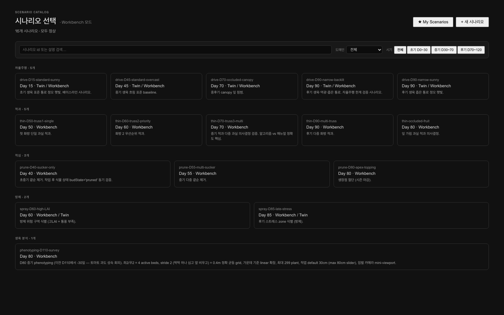
그림 D-1. Workbench 모드 진입 직후의 시나리오 Picker. 6 도메인 (자율주행·적과·적심·방제·인식·생육 분석) × 3 시기 구간 (초기 D0~30 / 중기 D30~70 / 후기 D70~120) 필터 + 검색창. 16 시나리오 카드가 도메인별로 그룹화되어 표시된다 — 카드 1 회 클릭으로 즉시 진입
D-2. 생육 분석 도메인 필터 적용 — phenotyping-D110-survey
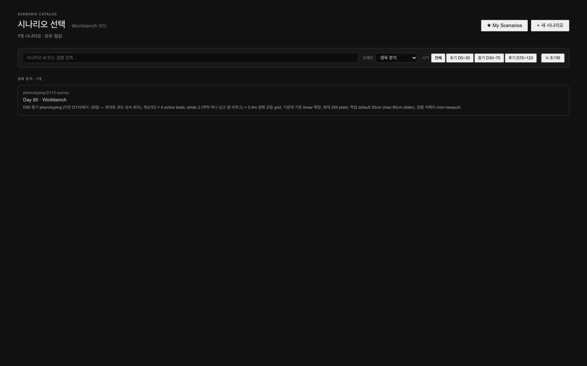
그림 D-2. 도메인 필터 = 생육 분석 적용. 본 시뮬레이터의 생육 분석 도메인 단일 시나리오 `phenotyping-D110-survey` 가 표시된다 — D80 중기 phenotyping, 좌/우 4 active beds × stride 2, 0.4m 정확 균등 grid, 최대 299 plant, 짐벌 카메라 mini-viewport
그림 D-3. phenotyping-D110-survey 진입 후 Workbench 메인. 좌측 PiP 에 짐벌 카메라, 중앙에 3D 온실 + 식물 군집, 우측에 Growth Analysis 패널 (Phenotyping / Navigation / Growth tab + Detection Mode + Coverage rule + Survey/Robot 상태), 하단에 START SURVEY 버튼 + speed 슬라이더, 상단에 New / Fork / Calibrate / Analysis 토글
D-4. Reference Truth Calibration — 9 변수 × literature ±20% 검증
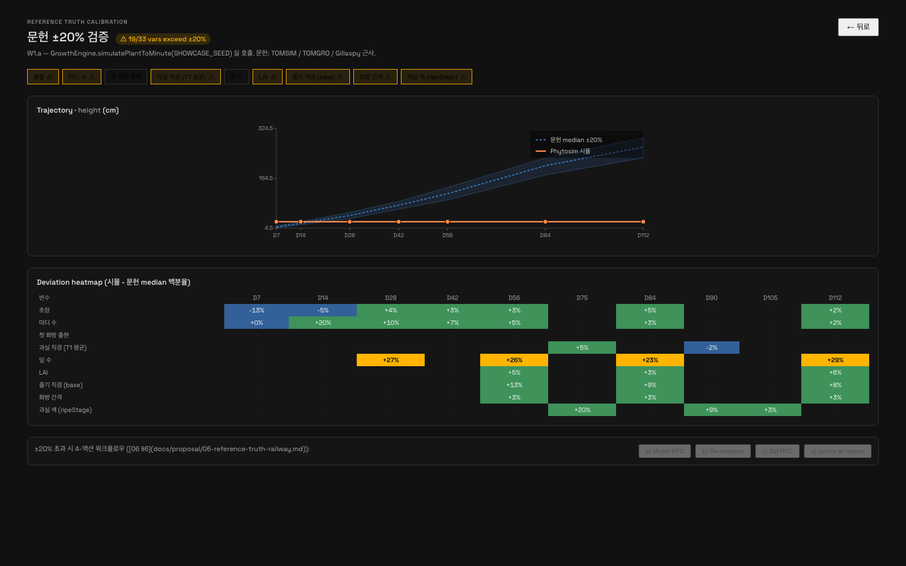
그림 D-4. 상단 Calibrate 버튼 → Reference Truth Calibration 페이지. 9 변수 (초장·마디 수·첫 화방 출현·과실 직경·잎 수·LAI·줄기 직경·화방 간격·과실 색) 의 시뮬레이션 trajectory 가 문헌 median ±20% band 와 비교된다. 화면 상단에 19/33 vars exceed ±20% 경고가 표시되며, 하단 Deviation heatmap 은 day×변수 matrix 로 어느 day 에 어느 변수가 ±20% 를 벗어났는지 시각화한다. 하단 4-액션 워크플로우 (Model RFC / Re-measure / Std RFC / Ignore w/ reason) 로 calibration 의사결정을 기록한다
본 페이지는 본 시뮬레이터의 학술 backbone (TOMSIM / TOMGRO / Gillaspy) 이
실제 simulation 결과와 어떻게 정합되는지를 실시간으로 보여주는 화면이며,
calibration 의사결정의 root 가 된다. Trajectory chart 의 Phytosim 시뮬
주황색 곡선은 GrowthEngine.simulatePlantToMinute(SHOWCASE_SEED) 호출 결과로
즉시 계산되므로, cultivar JSON 또는 model registry 의 파라미터를 변경하면
화면이 자동 갱신된다.
본 갤러리의 검증
본 갤러리는 다음 자동화 spec 로 매 release 이전에 재생성된다.
spec
위치
책임
_probe-entry-screen.spec.ts
tests/architecture/
A-1, A-2 재현
_probe-boot-trace.spec.ts
tests/architecture/
A-3, A-10 재현
_probe-phenotyping.spec.ts
tests/architecture/
A-4 재현
_probe-scenario-20.spec.ts
tests/architecture/
A-5, A-6, A-8, A-9 + B-1~B-5 재현
_probe-detect-flow.spec.ts
tests/architecture/
A-7 재현
_probe-hsv-detection.spec.ts
tests/architecture/
B-6 재현
test-coremodel.ts
packages/tomato-engine/
C-1~C-4 의 numeric backbone
각 캡처의 원본 PNG 는 html/_assets/screenshots/ 에, SVG 차트는
html/_assets/diagrams/ 에 보존되어 있다. 본 문서의 PDF 가 재생성될 때마다
동일 재현이 보장된다.